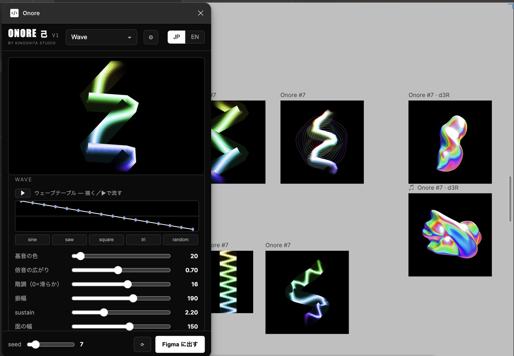

「99letters では、ロゴが作れない」。
99letters は、音楽の名義だ。10年以上その名前でテクノを出してきた。でもデザインやプラグインを出そうとしたとき、手が止まった。99letters にロゴを付けると、音楽のイメージに変なものが乗る——音楽名義に、別の顔を背負わせたくなかった。
道具には、道具の名前がいる。だから、スタジオの名前を新しく立てることにした。
— 開発日記 / the honest version
「99letters ではロゴが作れない」。
音楽名義のままでは出せなかったものを、
"工房"という器に入れ直した話。
——デザイン/プラグインスタジオ SHIAN 志庵 を作った、本人の裏話。
music → graphics.
99letters の音楽を、デザインの道具に。
99letters は、音楽の名義だ。10年以上その名前でテクノを出してきた。でもデザインやプラグインを出そうとしたとき、手が止まった。99letters にロゴを付けると、音楽のイメージに変なものが乗る——音楽名義に、別の顔を背負わせたくなかった。
道具には、道具の名前がいる。だから、スタジオの名前を新しく立てることにした。
志＝意志、目指すもの。庵＝作り手のいる場所、アトリエ。あわせて SHIAN 志庵＝「意志のある小さな工房」。大きな会社ではなく、ひとりの手が届く範囲で、確かなものを作る場所。
プラグインの名前は、99letters のアルバム 『解剖図鑑 / Kaibou Zukan』 の曲名から採った。Siren（鳴物）、Onore（己）、Kaibou（解剖）。バラバラの3本ではなく、音楽のシグナルチェーンと同じ順番で並べた。
点 → 面 → 質感。音源で打ち、シンセで面を作り、エフェクトで質感を与える——その流れを、そのまま画面の道具に置き換えている。
Siren（鳴物）は打楽器＝点。16ステップのリズムで"面"に痕を刻み、ぼかしたグラデ図形を生成する。Onore（己）はシンセ＝面。ウェーブテーブルから、流れる曲面を生む。Kaibou（解剖）はエフェクト＝質感。既存の写真やレイヤーに、暗室のような質感を掛ける。
出てくるのは全部 Figma のネイティブなベクター。あとから色も形も変えられる。生成して終わり、ではない。

ジェネラティブなプラグインは、世の中にたくさんある。Figma 公式の AI だって強い。機能の数で戦えば、負ける。
現役のテクノ作家が、自分の音楽の思想をそのまま道具にした——という一貫性こそ、いちばん模倣されにくい差だと思っている。
まずは V1 を出して、使いながら詰めていく。中でも Siren は、ユーザー自身のレイヤーを"点"として撒き、並べ、動かすシステムへ広げたい。自分の部品が素材になれば、Onore とも Kaibou とも被らない、Siren だけの場所になる。
琵琶湖のそばの小さな工房で、音楽と地続きの道具を、毎日自分で使いながら鍛えている。音楽の信号を、デザインの道具に。